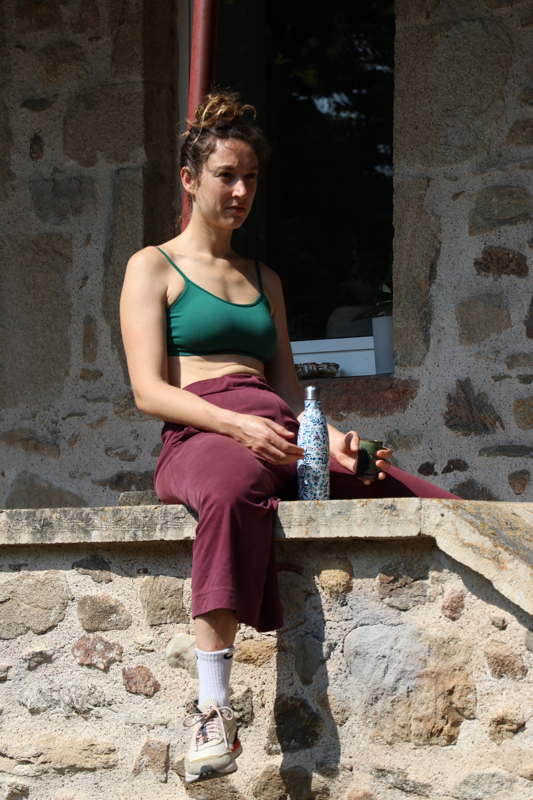

M’éveiller en prenant des photos. Petit tour d’horizon des différents espaces.
Me revoilà sous le chapi. Cerveau blanc. Ça défile moins vite sous mes doigts et dans ma tête. Un esprit trop apaisé, ça peut être tout aussi frustrant qu’une frénésie de pensées. C’est un état qui se prête bien à la photo. Contemplatif. Marielle déchire un drap blanc, Tikal à ses pieds. Un podcast au loin. Lisa fait des akènes. Des « a » quoi ? On apprend tous les jours des nouveaux mots au Labs.
L’observation se fait aussi par le son. La bande-son d’une répétition de danse, un tissu qu’on déchire, un podcast au loin, mes doigts sur le clavier, une scie circulaire, une visseuse. Mais aucune cacophonie, tout se répond dans un mouvement apaisant. Cerveau blanc.
Le réveil est aussi lent que l’arrivée du sommeil hier soir.
J’ai vu Tikal disparaître tout progressivement dans les buissons. Puis en ressortir quelques minutes plus tard.
Devrais-je attendre de me laisser cueillir par l’inspiration ou...
Laura demande à voix haute si elle devrait aller chercher les pommes en bas, genre. (Bien insister sur le genre)
Me laisser cueillir par l’inspiration ou aller repêcher d’anciennes avalanches d’idées dans les notes diverses et variées de mon téléphone, de mon ordinateur, de mes carnets ? Je sais qu’il y en a partout, numériques, manuscrites, volantes ou bien accrochées entre elles.
Je commence à penser plus à l’intérieur de moi, et les bruits environnants deviennent alors progressivement pollution. La cuisine a branché sa boom box. Je savais que viendrait ce moment où il me faurait m'isoler pour revenir à la racine des racines de cette arborescence luxuriante.
Le repos des corps qui en observent d’autres en mouvement. Je ne peux me résoudre à quitter votre énergie. Et pourtant…
Finalement cet esprit n’est peut-être pas si apaisé. Il ne l'est en tout cas plus. Il bute sur ses envies et ses besoins. Contradictions. Frustrations. Paradoxes. Je ressens pourtant une certaine douceur à être là. J’ai toujours eu l’intime conviction que mes incohérences étaient le sel de ma vie. Mais tout le monde sait que le sel est à consommer avec modération.
Surgit de nulle part une envie folle de m’installer un bureau sur le replat de l’observatoire, face à la vallée. Au bout de notre petit monde, j’arriverai certainement plus facilement au bout de moi-même. Mais je ne vais quand même pas déplacer un bureau jusque-là bas. Je repense à tous les bureaux de ma vie. Dans toutes mes chambres et appartements quel qu’il soit, j’ai toujours eu besoin de me créer un cocon dédié au « travail » et en cas d’espace réduit, dans mes premiers studios étudiants, j’ai toujours préféré manger sur mon bureau que travailler à ma table à manger. Question de point de vue uniquement.
À travers cette pensée, je pourrais partir dans quelque chose de différent… Me couper d'ici et plonger dans des souvenirs encore plus anciens.
Il faut vraiment que je m’isole, mais je ne sais où aller.
Je m’apprête à prendre une décision quand un souvenir me revient. Réveil matinal, trop matinal. Je n’ai pas regardé l’heure. Ressenti 5h. Des bribes d’idées et de phrases me sont venues. Dans ces moments-là, tu sais qu’il faut les ramasser tout de suite, qu’elles ne seront plus là si tu te rendors dessus. Mais l’énergie est absente. Tu as le choix entre te laisser t’envahir jusqu’à être suffisamment réveillée pour les noter quelque part ou à les chasser pour permettre au sommeil de revenir. J’ai choisi la deuxième option, je le regrette un peu maintenant. Pas comme cet autre matin, pourtant tout aussi similaire.
Interruption photo. Vol au vent les drapeaux bi or-argent de Sarah. Bruissement. Visite de la cave. Crissement de mes chaussures sur les graviers. Et là, une cuillère touille un liquide dans la cuisine. J’ai changé d’espace. D’espace et de position, dans le canapé du petit salon. Maintenant je dois accepter de lâcher ce texte et partir dans une quête archéologique d’anciennes idées à développer.
Je pense à mes carnets et regrette de ne pas en avoir amené des plus anciens. Il y a celui que m’avait offert Coralie. Je le sais plein d’idées inachevées…
Je commence finalement par relire les notes préliminaires du document word que j'ai commencé en arrivant. Trois fois rien, quelques lignes démarrées je crois au réveil, avant de décider de me lancer dans un...
J’ai mis Agnes Obel dans mes oreilles et je sens la concentration se faire, le rythme des mots plus rapide, les doigts qui tentent de suivre. Bientôt ça ira trop vite. Avec moi c’est toujours trop ou pas assez. Et je crois que j'essaie ici, à travers ce projet, d'apprendre à l’accepter, peut-être même à l'apprécier.
...Avant de décider de commencer chaque journée par un petit journal de bord de ma place dans l’énergie d’ici, énergie dont je viens de me couper... avant cela donc, j’avais entre aperçu ce par quoi il faudrait commencer, pour faire l’espace adapté à ce que je recherche.
Je relisais l'un des textes de ce projet dans mon navigateur, et devant la quantité d'onglets ouverts qui venaient me polluer... une question s'imposait.
Plus tard, je parcours le terrain.
Il y a cette herbe qui me rappelle une maison de vacances d'enfance, nichée au cœur des Alpes.
Je sais qu'il y aura des moments de fulgurance
Mais ce n'est décidément pas aujourd'hui.
Ça a changé là où Margot dansait. Ça a changé en bien en mal je ne sais pas. Mais ça a changé je ne reconnais presque pas et ça me fait comme un petit pincement au cœur. Plus d'herbe a été coupée. Le chemin s'est élargi. Ça semble moins vert, moins luxuriant, moins refermé. C'est plus ouvert moins cocon. Mais ça met mieux en valeur cet arbre. Il est beau.
Je crois que je me sens quand même bien devant cet arbre, mieux en tout cas. Mon corps tendu de cette concentration enfin trouvée a envie de s'asseoir là. Je suis encore debout en train de projeter mon esprit dans cette envie de m'abandonner là quand j'entends la voix de Guevork sonner le clairon du repas. Esprit rebelle, je décide de quand même prendre quelques minutes supplémentaires en face de l'arbre. Je m'asseois donc. Deux photos. Je me relève. Je reviendrai.
Des veines parcourent son tronc. Lianes d'un autre végétal. Il y a quelque chose à faire devant cet arbre. Ça a changé mais cet endroit reste un petit îlot de bonheur de tranquillité de calme et de fraîcheur. J'ai presque envie d'y venir avec mon ordinateur cet après-midi.
Je suis revenue. Avec toutes mes affaires. Ça ne sera peut-être pas très confortable. Mais je suis là. Le temps d'une sieste ou pour des heures de concentration, la suite le dira. Pour l'instant je suis bien.
Ou alors rien n'a changé. Ou très peu. Et c'est moi qui vois tout différemment. Car je ne suis plus la même. On est jamais tout à fait la même personne. Et je vois les choses sous un autre œil. La nature reste immuable face à la frénésie de l'humain qui évolue sans arrêt. Elle s'active sur un rythme beaucoup plus lent, cyclique. L'arbre pousse. Ses feuilles tombent... et je m'arrête là dans cette réflexion inachevée.